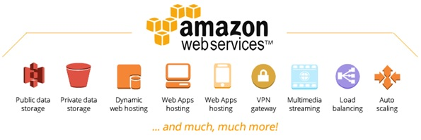

Researched and written by Jack Lynch

Cloud Computing is on-demand availability of computer system resources. The cloud is essentially a data centre accessed via the Internet and in simple terms means storing and accessing data online instead of your computer’s physical drives. One of the in demand cloud services available right now is ‘Amazon Web Services’ or AWS for short. AWS is recognised as one of the highest quality services in this field as it embraces new developments and is continually being updated. In terms of business incorporated technology, this could be considered state of the art. This service offers creative cloud computing from one of the world’s most reputable companies. It was founded in 2006 and has been offering on demand cloud computing solutions to individuals and businesses ever since.
The service allows for a range of customisation options which can be tailored to suit any business. Some of the notable features include encryption key creation and auditing which are vital parts of any businesses’ website maintenance. Although competitors like Oracle and Microsoft offer similar cloud-based computing services, Amazon Web Services lead the way in sales and positive reviews online.
A key factor of the success of AWS is the cost effectiveness it offers to businesses. With different payment models like ‘month-to-month’ it allows new businesses to ease their initial financial burden as opposed to paying outright. The service allows you to pay less per GB of storage the more you use and also has many free tiers if businesses only use the service for a limited amount of storage. AWS has also been complimented for its stability and security measures.
Two common acronyms associated with current cloud computing are IaaS and PaaS. IaaS refers to Infrastructure as a Service which allows businesses and individuals to access fundamental computing resources. These resources include the use of virtual servers, OS software, networking infrastructure and storage. PaaS refers to Platform as a Service. This provides a ‘complete cloud-based platform’. The service allows for developing, running, and managing applications without the cost of maintaining the platform in a physical state. These are some common uses for cloud-based services by businesses in particular as it is very cost effective and provides efficient solutions for data storage, communication, and centralised servers or intranets.
Although cloud computing is being used in most organisations now, in the next 3-5 years it will become the industry standard. Mobility in the workplace is essential as many employees need to be able to work remotely. With the access to technology most have, the standard of work being produced is no different to that being produced within the office. In comparison, twenty years ago communication was not this fluid and work progression would suffer with employee absence. As cloud computing becomes more accessible and intuitive, employees working remotely will experience no difference in access to data or ease of communication.
Quantum computing, when developed to an accessible and affordable level, will have a gigantic impact on the computing power businesses integrate into their processes. With cloud computing’s main purpose being to provide high-speed network systems, it will be a complimentary pairing when quantum computing is introduced to mainstream business operations. The use of blockchain is already becoming more common. Many companies are already harnessing the power of blockchain for business practices like validation. Cloud computing is already decentralised and scalable, making it another perfect pairing for the use of blockchain as a business solution.
Most of the impacts will be positive as this technology will become more accessible and cost-effective over time. The key impact will be convenience within businesses for their employees. Accessing work documents and files on the go is already possible but to have a completely decentralised server is another level of fluidity. Mobility in business will hit an all-time high. As discussed before, the workplace will change. The physical office space may no longer be required and if cloud-based processes become common enough, it could become the norm. One large change will be the perception people have of this technology. People who aren’t ‘technology natives’ may be sceptical as they prefer physical storage and may have pre-determined assumptions about its use. When properly introduced to these processes and are provided with education on their use, it could allow for a different group of people to harness this technology not only for professional reasons but for their personal benefit.
It seems that the generation that have grown up with this technology will only be affected in a positive way as familiar processes will only be improved upon. Once again, those who are not familiar with this technology may be daunted and challenged when forced to use it on a daily basis. It may be difficult for those who are not as technologically skilled to understand these new processes quickly. They may be frustrated as they have finally understood the current processes, only for them to change. This is why compulsory education on cloud-based services is essential as it does not allow anyone to not be able to complete their job comprehensively. If a company elects to use a large organisations product like Amazon Web Services, a lot of site maintenance jobs will become redundant as this will be handled by Amazon. In house IT technicians will keep their jobs as laptops and other devices may need to be serviced and have company licenses installed etc. Physical storage manufacturers could face a serious threat with all storage going cloud based, this also applies to companies that offer physical server setups.
At the moment, my only use of cloud-based services is from Microsoft OneDrive. I use this to store and share university documents. One day I am hoping to launch my own business and from the start I will be using cloud-based storage for all work-related documents. Decentralised servers will also be implemented to allow for remote work. As this technology evolves, I believe physical servers and storage will become a thing of the past and I am personally excited for further innovation in cloud computing. I will begin to use cloud storage solutions for images and potential game data, as this form of storage is becoming increasingly common for console and PC gaming. This allows for save-file access across multiple platforms, meaning progression is maintained on any console. I currently use four hard drives, two for consoles and two for pc data management, backups, and general storage. These take up space on my desk and have also cost quite a bit.
When cloud computing becomes a bit more affordable for a high amount of storage, I will become entirely cloud based. For 5 TB of storage per month on OneDrive, for personal use not a business plan, it costs $200 USD per month. This makes the physical hard drives the more financially feasible option as it is one outright cost as opposed to the ongoing subscription. The main difference for me when this becomes more affordable is the central access and physical space I will gain back.
My friends are in the same situation with storage for games and personal use, it is all physical. They are also hoping to make the transition to cloud storage when it becomes more affordable. My parents do not use much storage at all as they do not rely on computers. When the use of cloud storage becomes more common, I assume they will use services like iCloud to store photos on their phones.
[1] T. pro, "Best cloud computing services of 2020: for Digital Transformation", TechRadar, 2020. [Online]. Available: https://www.techradar.com/au/best/best-cloud-computing-services. [Accessed: 13- Apr- 2020].
[2] "What is Amazon Web Services and Why Should You Consider it?", Insights - Web and Mobile Development Services and Solutions, 2020. [Online]. Available: https://www.netsolutions.com/insights/what-is-amazon-cloud-its-advantages-and-why-should-you-consider-it/. [Accessed: 13- Apr- 2020].
[3] "Cloud computing", Ibm.com, 2020. [Online]. Available: https://www.ibm.com/cloud/learn/cloud-computing. [Accessed: 13- Apr- 2020].
[4] "Top 8 Trends In Cloud Computing And How Companies Can Prepare For 2020 | Cloudreach", Cloudreach.com, 2020. [Online]. Available: https://www.cloudreach.com/en/resources/blog/top-8-trends-in-cloud-computing-and-how-companies-can-prepare-for-2020/. [Accessed: 13- Apr- 2020].
[5] "What Is Cloud Computing & How Does 'The Cloud' Work?", Fastmetrics Business Blog, 2020. [Online]. Available: https://www.fastmetrics.com/blog/tech/what-is-cloud-computing/. [Accessed: 16- Apr- 2020].
[6] "Amazon Web Services", IT Jack, 2020. [Online]. Available: http://itjack.co.uk/cloud-solutions/amazon-web-services/. [Accessed: 16- Apr- 2020].